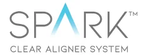
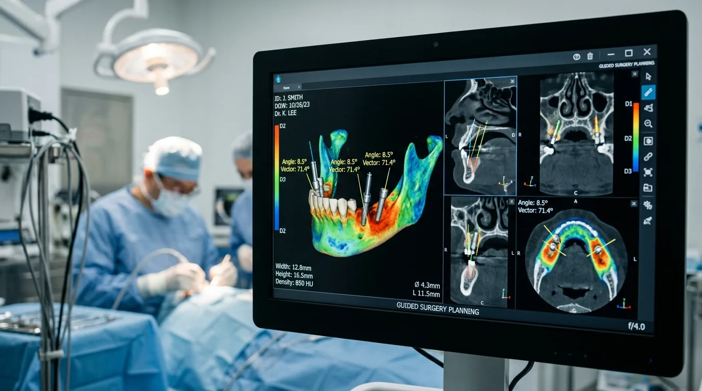

Odontología de Precisión Suiza e Implantes Dentales Guiados 3D
Recupere su sonrisa definitiva en 24 horas con microcirugía guiada por ordenador, sedación consciente monitorizada y materiales bioactivos Straumann®. Diagnóstico digital 3D y presupuesto cerrado sin sorpresas en Costa Adeje, Tenerife Sur.

4 Pilares de Excelencia Quirúrgica en Costa Adeje
Fusionamos la ingeniería biomédica de Zúrich y Basilea con la experiencia médica de primer orden para brindar tratamientos 100% seguros, indoloros y duraderos.
Cirugía Guiada 3D
Planificación virtual asistida por escáner CBCT milimétrico. Inserción mediante férula quirúrgica sin bisturí tradicional ni puntos de sutura molestos.
Carga Inmediata 24h
Dientes fijos colocados el mismo día de la intervención quirúrgica. Recupere la función masticatoria y la sonrisa natural de forma inmediata sin esperas.
Sedación Monitorizada
Protocolo anestésico indoloro supervisado por médico anestesista. Relajación total sin dolor, diseñado especialmente para pacientes con fobia o ansiedad.
Garantía de 10 Años
Pasaporte oficial internacional y certificado de garantía oficial Straumann® por 10 años en todos los componentes protésicos y de titanio grado 4.

¿Cómo Funciona la Microcirugía Guiada Straumann®?
La técnica quirúrgica convencional se basa en incisiones abiertas a ojo desnudo. En Dental Costa Adeje digitalizamos la totalidad del proceso quirúrgico con precisión submimétrica.
Capturamos la anatomía ósea, nervios y encías en una réplica virtual tridimensional sin pastas molestas.
Imprimimos en resina biocompatible la guía que orienta el ángulo, profundidad y posición exacta del implante.
Colocación sin cortes en la encía, postoperatorio sin inflamación y colocación de dientes fijos en 24 horas.
Cuadro Médico Quirúrgico Certificado
Profesionales colegiados con amplia trayectoria en cirugía reconstructiva maxilofacial, implantología bioactiva y rehabilitación oral estética en Tenerife Sur.
Dr. Facundo Mateo Ríos
Colegiado Oficial COEST Nº 38000921Especialista en cirugía guiada 3D, regeneración ósea avanzada y rehabilitación de carga inmediata con certificación Straumann Certified Provider.

Dra. Ana Isabel Martín Fuster
Colegiada Oficial COEST Nº 38001140Experta en Digital Smile Design (DSD), carillas cerámicas de alta resistencia E-Max y rehabilitación oral integral sobre implantes de titanio.

Dra. Maryuri de Castro
Colegiada Oficial COEST Nº 38001215Especialista certificada Invisalign Diamond Provider y Spark, experta en alineación estética sin brackets y armonización orofacial biomecánica.
Transporte Privado Gratuito para su Comodidad
En Dental Costa Adeje sabemos que su bienestar comienza antes de llegar a la clínica. Ofrecemos a nuestros pacientes un servicio privado de traslado puerta a puerta en moderna furgoneta climatizada sin ningún coste adicional.

Reserve su 1ª Consulta Quirúrgica y TAC 3D Gratuito
Seleccione su tratamiento, elija fecha y le contactaremos de inmediato para confirmar su cita con recogida opcional incluida.
Costa Adeje Dental Center
Instalaciones de máxima esterilización quirúrgica y confort hospitalario en el sur de Tenerife.
Av. Kurt Konrad Mayer, 35, Edificio Karma, Locales 3 y 4
38660 Costa Adeje, Santa Cruz de Tenerife
Lunes a Viernes: 08:30 – 19:30 (Verano: 08:30 – 16:30)
Sábados y Urgencias: Cita previa telefónica